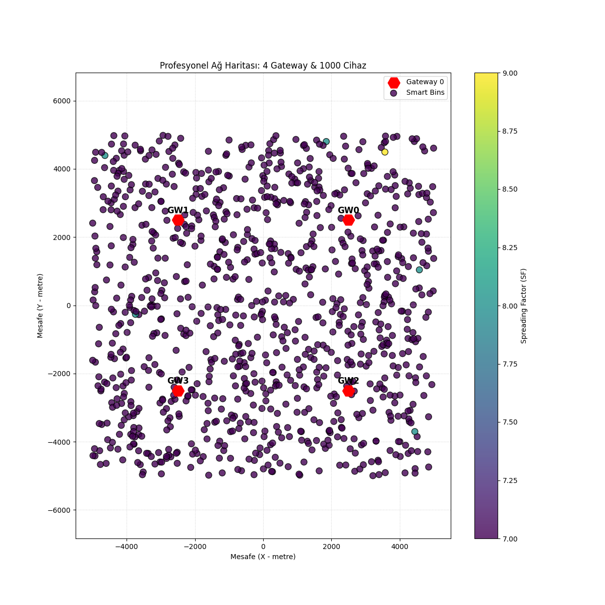
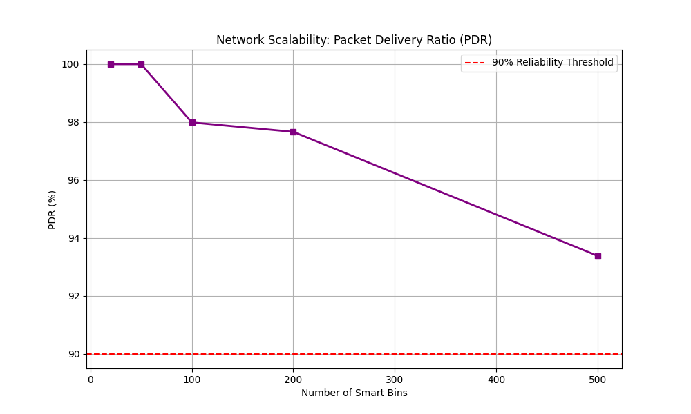
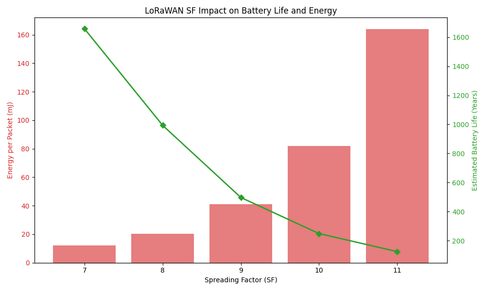
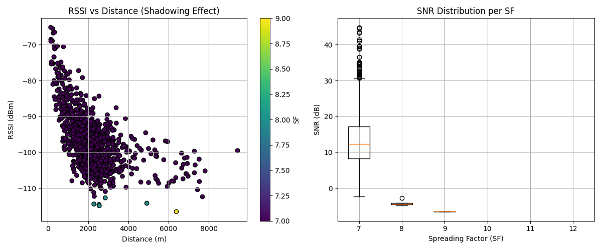
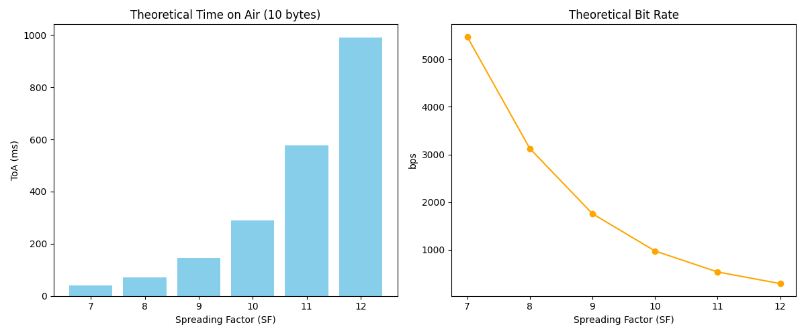

Network Analytics
Smart City Trash Bin Simulation - Phase 6 Results
Total Devices
1,000
Gateways
4
Avg Success Rate (PDR)
98.9%
Packet Loss (Blindness)
11.2%
Multi-Gateway Spatial Distribution
Real-time ADR mapping with Shadowing effects

Scalability & Blindness

Energy & Battery Life

Signal Quality (Shadowing)

Theoretical Limits

Technical Insights
Simülasyon sonuçları, LoRaWAN ağlarında kapasitenin önündeki en büyük engelin "Gateway Körlüğü" (Half-Duplex) olduğunu göstermektedir. Şehir genelinde dağıtılan 4 Gateway sayesinde PDR oranı %98 seviyesinde tutulabilmiştir.